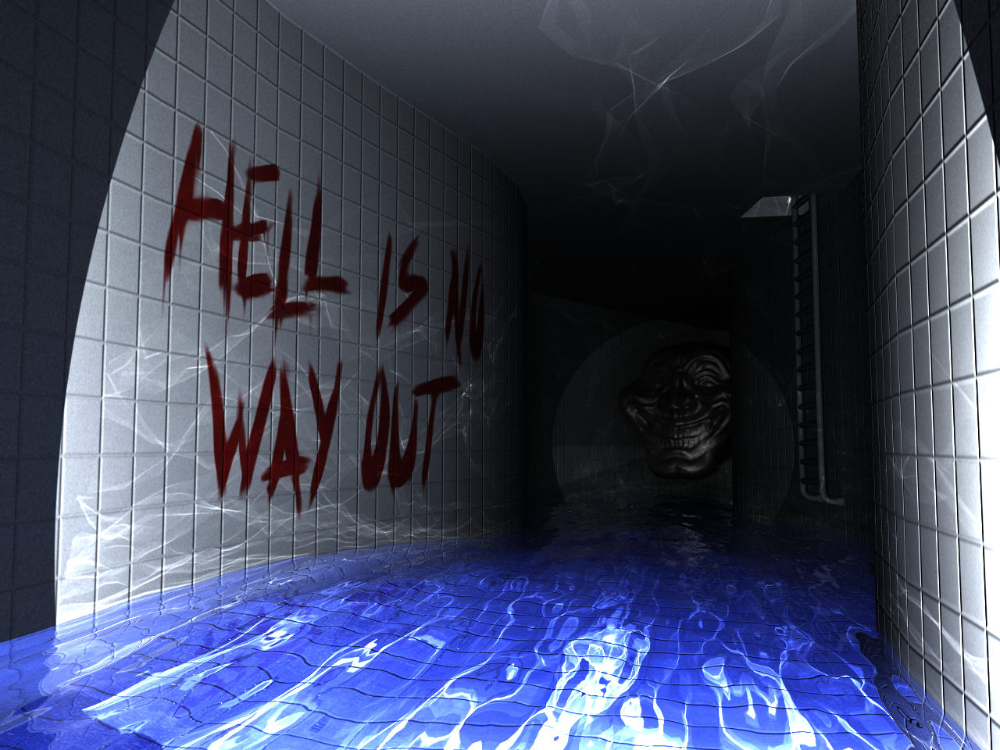
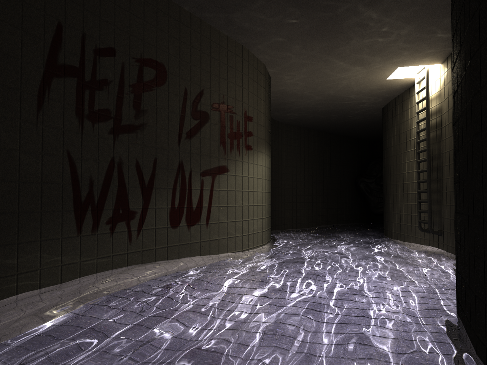
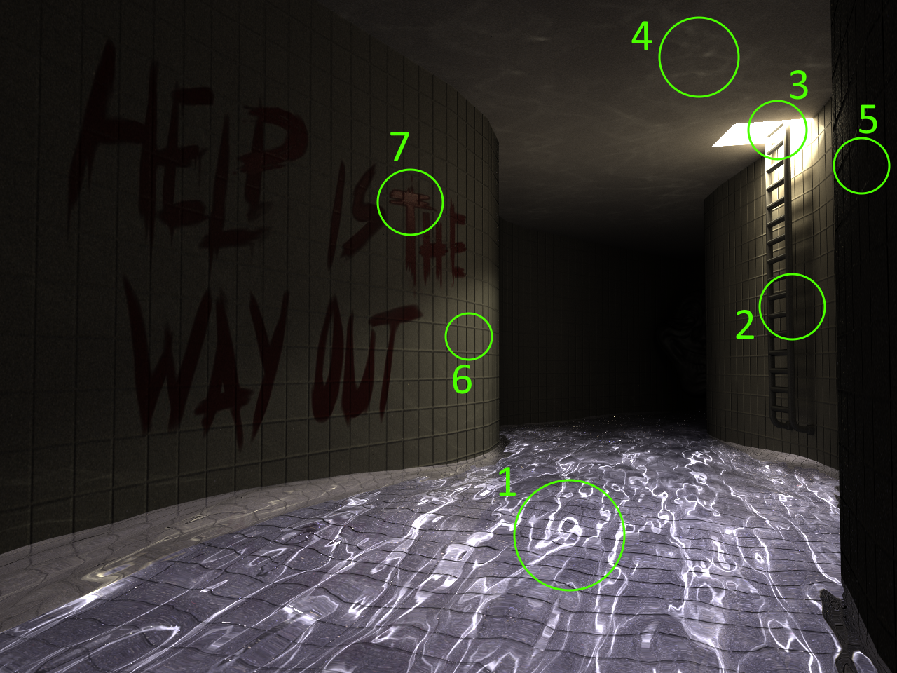
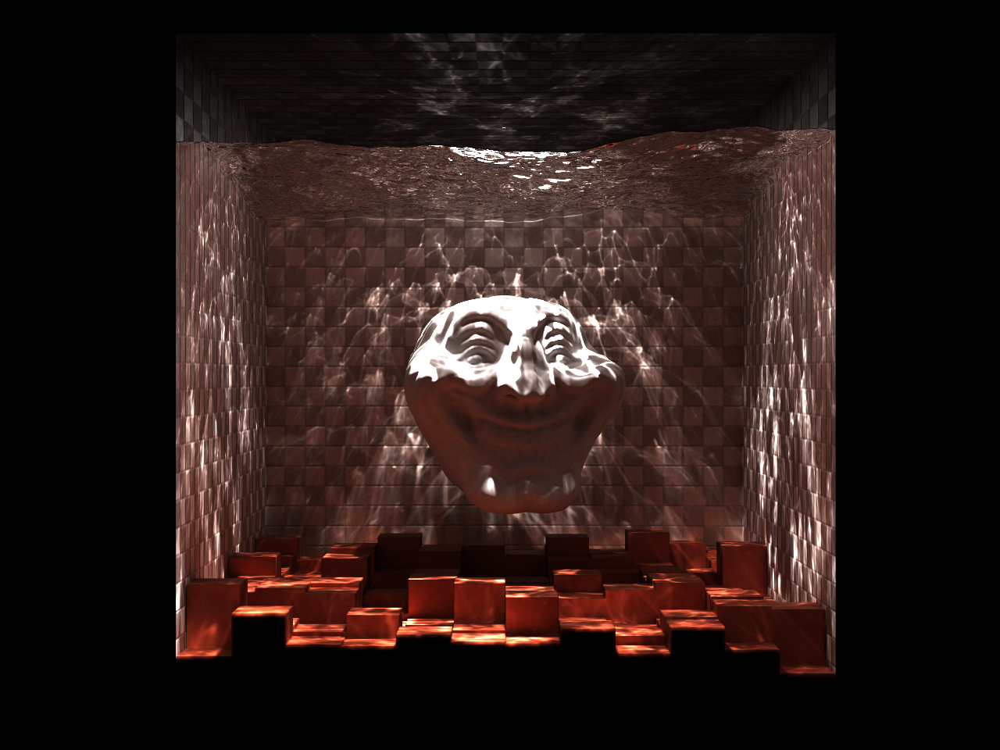
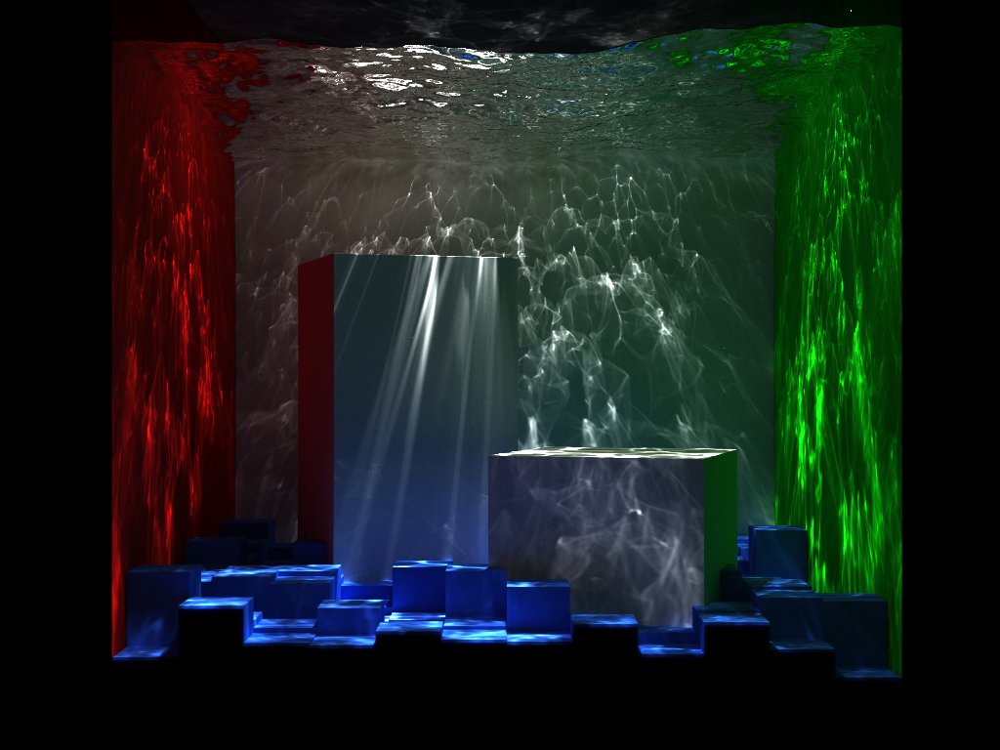

My Chlorinated Nightmare

Scene 1

Scene 2

Scene 2 with features highlighted
- Caustic lighting effects from light being focused by water.
- Soft shadows resulting from global illumination effects (light bouncing off of surfaces)
- Area light used to illuminate the scene
- Fresnel reflections of light off of the surface of the water creating caustic patterns
- Glossy highlights on the walls give the walls a more ceramic tile feel
- Normal mapping textures are used to give the illusion of depth in the grout lines between tiles on an otherwise flat geometric mesh
- Roughness textures are used in addition to color textures to make the paint stand out from the tiles

Iterations of the PPM algorithm

Scene 3

Scene 4